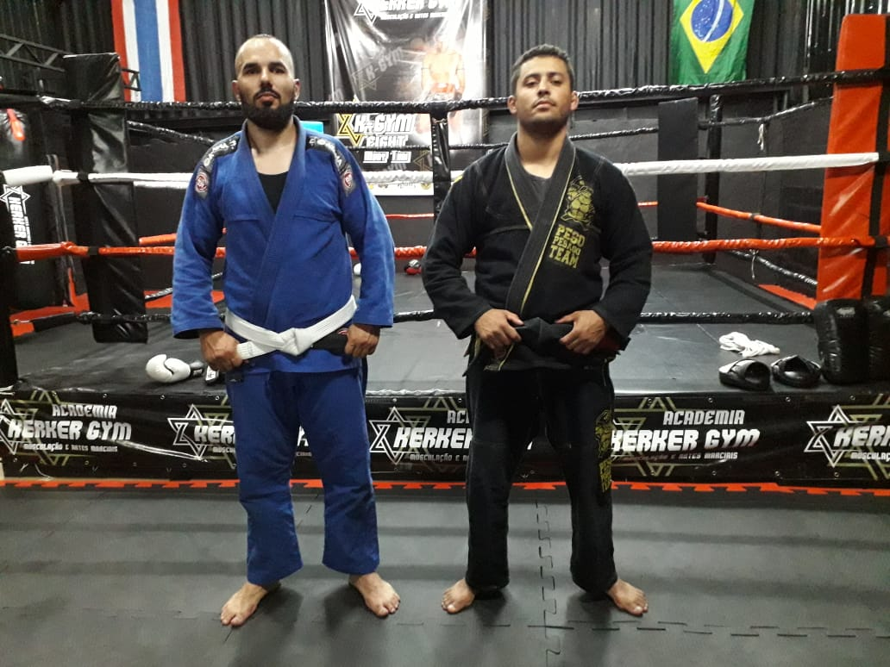

Mergulhando no mundo do Desenvolvimento Full-Stack na Trybe
Entusiasta da Tecnologia
Brasil / São Paulo
Já fui aluno do curso de Ciência da Computação e agora curso Engenharia de Software
Trabalhei na área de T.I. durante um tempo, porém com foco em tecnologias de redes e telecomunicações

Faz muito tempo que não entro em blog nenhum, mas costumava entrar nesse: Liga de Boxe